Introduction
Vision Artificielle
📖 Extraire automatiquement des informations à partir de données visuelles


- Applications nombreuses : médical, industriel, sécurité, robotique, ...
- Comment ? Réseaux de Neurones Artificiels ( ANNs ) par l'apprentissage profond
Consommation Énergétique
Estimation d'énergie consommée lors d'une inférence des modèles de l'état de l'art par année[Desislavov2023]


Consommation Énergétique
- Évolution des modèles
- Complexité (profondeur, paramètres, ...)
- Puissance de calculs requise
- Consommation énergétique
- Enjeux majeurs
- Environnement
- Applications
$\Rightarrow$ Problématique principale
Technologie Neuromorphique
📖 Technologie inspirée par le fonctionnement des neurones biologiques.
- Capteur : Caméra événementielle
- Traitement : Réseaux de neurones impulsionnels (SNN)
- Systèmes de vision économes en énergie
$\Rightarrow$ Solution prometteuse
Caméra Événementielle
- Inspirée de la biologie
- Événements asynchrones lors d'un changement d'intensité du pixel
- Capture du mouvement
 |
Caméra Événementielle
- 🪶 Représentation éparse
- 🚀 Faible latence (~1 µs)
- Flou cinétique
- 🛡️ Haute plage dynamique
- 🌍 Efficacité énergétique
Réseaux de Neurones Impulsionnels
- Bio-inspirés (neurones impulsionnels)
- Neurones communiquent par impulsions binaires dans le temps
Défis du Neuromorphique
- Par rapport aux méthodes conventionnelles
- Domaine moins étudié
- Technologies moins matures
- $\Rightarrow$ Performances et complexité des approches neuromorphiques moins avancées
- Besoins du domaine
- Développement de nouvelles approches en vision neuromorphique
- Analyses approfondies pour leur compréhension
Objectifs
Progrès des technologies neuromorphiques dans les tâches de vision artificielle
- Conception de modèles d'apprentissage profond avec SNNs et/ou caméras événementielles
- Études expérimentales pour approfondir nos connaissances
État de l'Art
Trois Domaines
- Approches classiques : ANN + images
- Vision événementielle : vision artificielle avec des caméras événementielles
- Réseaux de neurones impulsionnels
Approches Classiques
Évolutions marquantes
- Adoption des réseaux de neurones convolutifs (CNNs)
- AlexNet[TODO] (2012) atteint les meilleures performances sur ImageNet[TODO]
- ResNet[TODO] introduit la notion de blocs résiduels
- ...
- Convolutions 2D pour les images : 2D-CNN
- Convolutions 3D pour les vidéos : 3D-CNN
- Plus récemment (2020)
- Arrivée des transformeurs de vision (ViT)
- Besoin en données annotées massif $\Rightarrow$ apprentissage auto-supervisé (SSL)
- Modèles de fondations : modèles de grande envergure pré-entraînés
Formulation - Réseau de Neurones
$f_{\alpha}(Input) = Output$
- $f_{\alpha}$ $\rightarrow$ réseau de neurones dont $\alpha$ est l'ensemble des poids entraînables
- $Input$ $\rightarrow$ les données en entrée
- $Output$ $\rightarrow$ les caractéristiques en sortie
Formulation - Encodeur Convolutif
$f_{\alpha}(\mathbf{I}) = \mathcal{F}$


Réseaux de Neurones Impulsionnels
Réseaux de neurones composés de neurones impulsionnels

Neurone "Integrate-and-Fire" (IF)
[TODO]
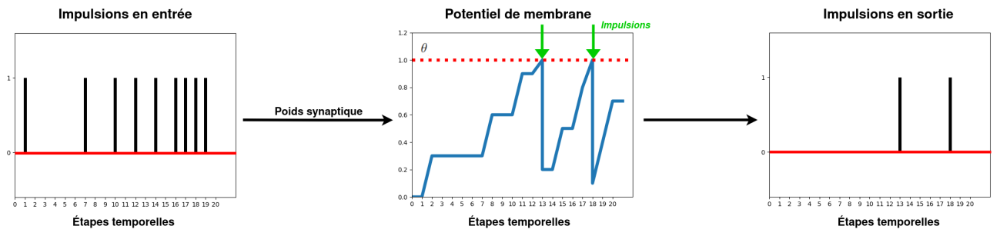- Potentiel de membrane
- Génération d'impulsion
- Retour au repos
Règles d'Apprentissage
- Conversion ANN-vers-SNN
- SNNs profonds et performants
- Lents et consommateurs
- Règles d'apprentissage biologique (STDP)
- Non-supervisé, adapté au matériel spécialisé
- Complexité des SNNs limitée
- Rétropropagation 🏅
- SNN $=$ Réseau de neurones récurrents
- $\rightarrow$ Rétropropagation à travers le temps
- Apprentissage direct du SNN
- SNNs profonds et performants
- ⚠️ Non-différentiabilité des impulsions
- $\rightarrow$ Apprentissage par Substitut du Gradient (SG)[Neftci2019]
Apprentissage par Substitut du Gradient
Problème du neurone mort[Eshraghian2021]

Problème du neurone mort[Eshraghian2021]

Problème du neurone mort[Eshraghian2021]

Remplacer la dérivée par un substitut

Modalité - Caméra Événementielle


Discrétisation sur $T$ étapes temporelles

Modalité - Image Statique
❌ Les images statiques ($\in \mathbb{R}$) ne sont pas adaptés pour le traitement par des neurones impulsionnels

Vision Événementielle
- Revue -
Réseaux de Neurones Impulsionnels
Problématique du SG
- 🆕 Emploi récent
- 👟 Développement rapide
- ❌ Peu d'analyses du comportement de ces SNNs
- ➡️ Quelles sont les particularités par rapport aux ANNs?
📸 Vision Événementielle
Tâches de vision
- 📈 Nombre croissants de tâches de vision traitées
- Classification, détection d'objet, segmentation, ...
- Flux optique, amélioration d'images, reconstruction vidéo, ...
- Reconnaissance labiale, détection de drones, ...
- ⚡ Adoption des SNNs...
- 👴 ... mais ANNs restent plus populaires
Bases de Données Événementielles
Deux catégories selon la dynamique de la scène
Comportement
statique

Comportement dynamique

📸 Vision Événementielle
Verrous scientifiques
- 🚀 La vision événementielle s'étend vers de nouvelles applications
- ➡️ création de BDDs requise
- 💸 Processus coûteux (temps et moyens)
- 🐌 Ralentit la diversification du domaine
🗒️ Bilan
- Dans nos travaux :
- CSNN et 2D-/3D-CNN profonds
- Apprentissage par Substitut du Gradient (SG)
- Simulation des neurones impulsionnels
- Problématiques abordées :
- Représentation d'événements
- Développement et analyses des SNNs
- Réduction des annotations pour la vision événementielle
Réseaux de Neurones Impulsionnels
pour la Localisation d'Objet
🖼️ Contexte
- 💪 L'apprentissage profond par SG est efficace...
- 👶 ... mais est encore récent :
- ➡️ Peu de tâches de vision étudiées
- ➡️ Manque d'analyses
- Dans ce travail :
- Développement d'un SNN Convolutif (CSNN) pour la localisation d'objet
- Analyses du comportement de ce CSNN selon divers aspects
Formulation - Localisation d'Objet

🔎 Aspects Étudiés
- Deux modalités étudiées : images statiques et flux d'événements
- Latence temporelle ($T$)
- Robustesse aux corruptions des capteurs
- Estimation du coût énergétique
- Codages neuronaux pour les images
⚔️ Étude Comparative
❗ On compare un encodeur convolutif CSNN avec un ANN d'architecture similaire : un 2D-CNN
- 🎯 identifier les différences dans le traitement des données visuelles
- 👥 architecture et complexité similaires
Encodeur Convolutif - ANN

Encodeur Convolutif - SNN


 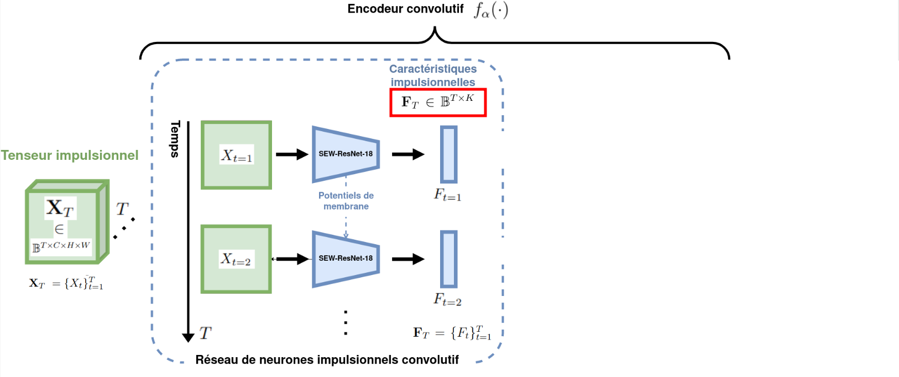
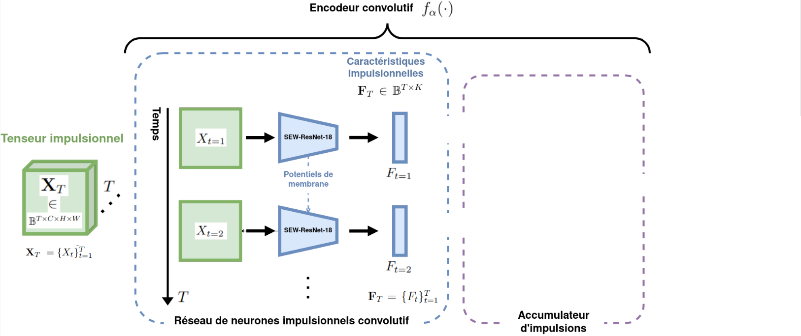
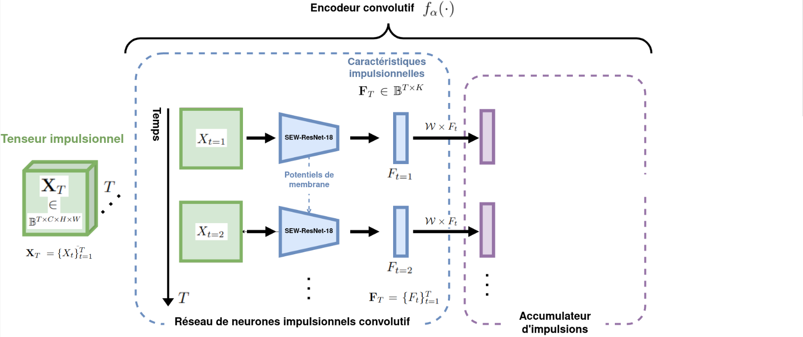
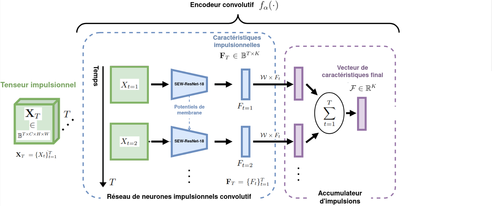
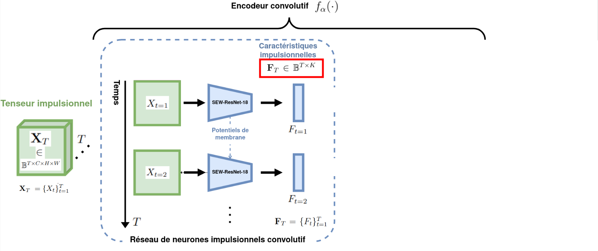
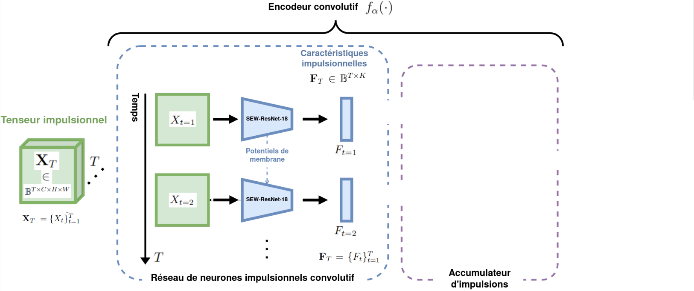
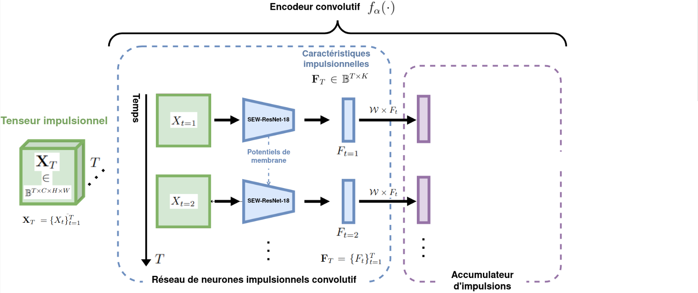
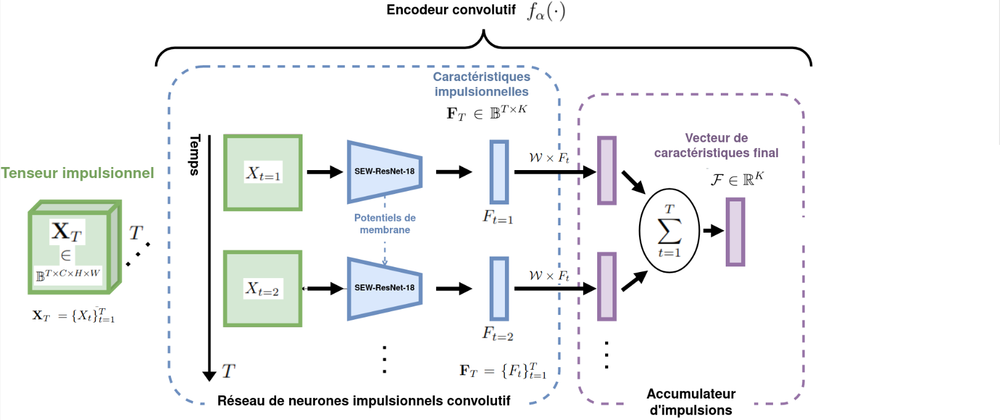

Bases de Données

Codages Neuronaux Étudiés

Original |

Codage fréquentiel 
Codage temporel 
Codage par phases 
🆕 Codage par saccades Codage entraînable |
Images Statiques - Latence Temporelle
- Protocole :
- Définir un nombre $T$ d'étapes temporelles
- Mesurer la performance de localisation ($mIoU$)


📷 Images Statiques - Latence Temporelle
- Protocole :
- Définir un nombre $T$ d'étapes temporelles
- Mesurer la performance de localisation ($mIoU$)
 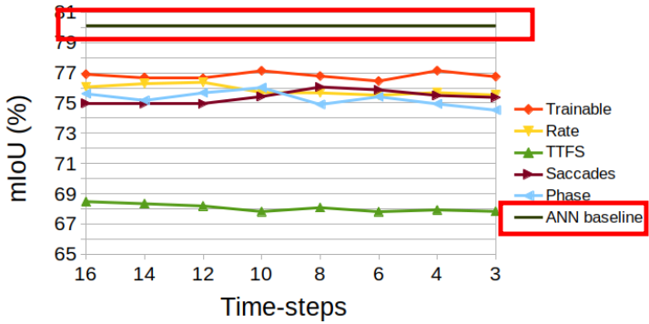
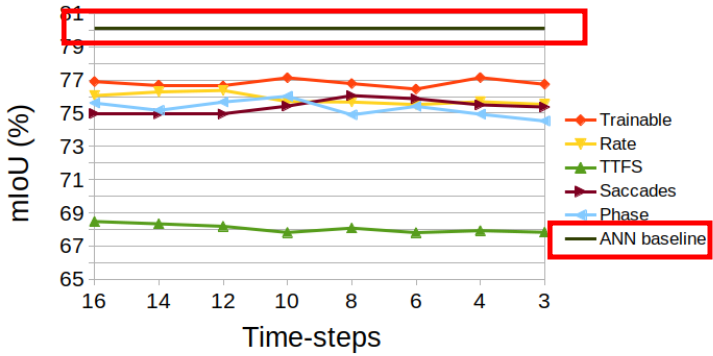
- ❌ Aucune corrélation significative entre $T$ et les performances
- ❗ Comparaison des codages neuronaux
- Observations contraires aux règles biologiques (STDP)
- 🥈 Performances inférieures à l'ANN mais compétitives
📷 Images Statiques - Robustesse


 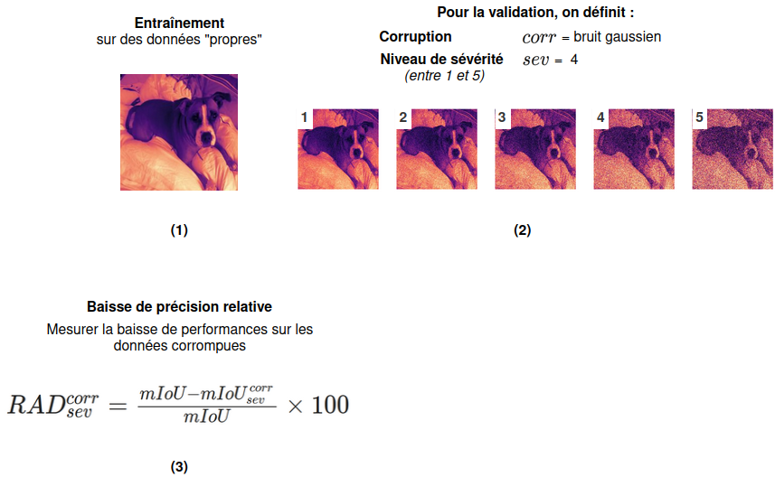
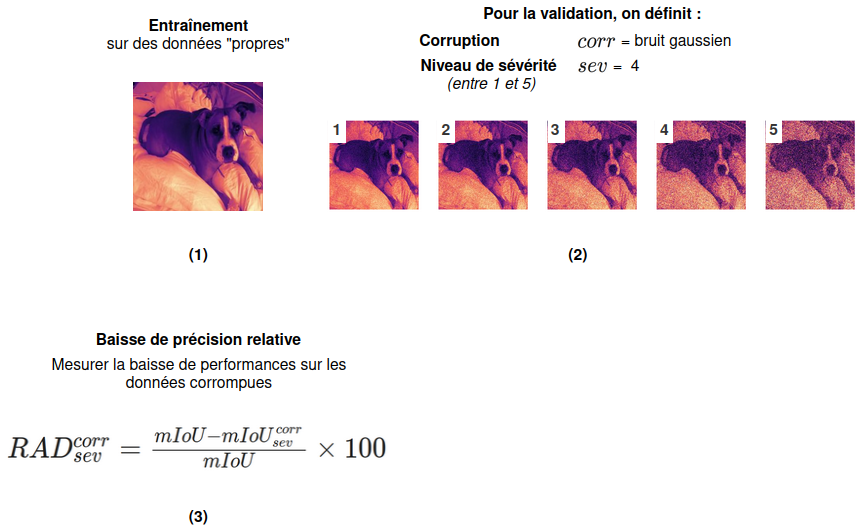


Images Statiques - Corruptions

Images Statiques - Corruptions
Valeur de $mRAD^{corr}$ pour chaque corruption et chaque codage neuronal
📸 Événements - Latence Temporelle


📸 Événements - Latence Temporelle
Trois Avantages d'une faible valeur $T$
- 🏃 SNN est plus rapide
- 🪫 SNN est économe en énergie
- 💪 SNN plus performant
⚠️ Base de données à comportement statique
Événements - Corruptions


Événements - Corruptions
Valeur de $mRAD^{corr}$ pour chaque corruption

- Sensibilité au bruit du SNN $\rightarrow$ hypothèse des potentiels de membrane
Consommation Énergétique
- Estimation de l'énergie consommée[TODO]
- Calcul des FLOPs effectués lors de l'inférence
- ℹ️ (lié au nombre d'impulsions émises)
- Estimation sur une puce CMOS de 45nm [TODO]


Bilan de l'Étude
- Supériorité des faibles latences
- Codages Neuronaux : intérêt du codage fréquentiel
- SNN compétitif
- Efficacité énergétique 🥇
- Événements : performance - robustesse 👎
- Images : Performance 🥈 - robustesse 👍
Pré-entraînement Auto-supervisé
pour la Vision
Événementielle
🖼️ Contexte
- 📈 Modèles profonds pour la vision événementielle
- Apprentissage supervisé : nécessite beaucoup de données annotées
- ➡️ Complexifie le développement de nouvelles applications
- Solution Proposée : Apprentissage auto-supervisé
- Pré-entraîner un modèle sur des données sans nécessiter d'annotations
📚 Solutions Existantes


- Supervisé : utiliser une grande BDD générique annotée puis affiner
- 👎 peu de BDDs événementielles pertinentes

- Apprentissage Auto-supervisé de Représentation (SSRL) : capturer les propriétés et motifs intrinsèques des données
- 👍 pas d'annotations requises
- 👍 proche du domaine d'application
📚 Solutions Existantes - SSRL événementiel
- Peu de travaux existants
- Tâches de bas-niveau (flux optique, ...) [TODO,TODO]
- Travaux concurrents pour les réseaux profonds (3)[TODO,TODO,TODO]
- 👎 limités à du comportement statique
- 👎 concentrés sur un seul type de réseau (ViT / SNN)
📚 Solutions Existantes - SSRL événementiel
Constat
- Domaine très prometteur pour réduire le besoin en annotations...
- ... mais très peu étudié
⚙️ Méthode
- 🧠 Modèles visés : encodeurs convolutifs légers (CSNN, 2D-CNN, et 3D-CNN)
- 📁 Polyvalence des données : comportements statiques et dynamiques
- 👥 Architecture d'encodage conjoint
- Architecture en deux branches
- Deux versions transformées de la même entrée
- Augmentations de données événementielle (EDAs)
⚙️ Méthode
Augmentation de Données Événementielle (EDA)


Une EDA peut être une composition d'autres EDAs
⚙️ Méthode
Architecture d'Encodage Conjoint[TODOvicreg,TODObarlow]


⚙️ Méthode
Encodeurs étudiés
- 2D-CNN : ResNet-18[TODOresnet]
- 3D-CNN : MC3-ResNet-18[TODOresnet3d]
- CSNN : SEW-ResNet-18[TODOsew]
- ℹ️ Même complexité ($\approx$11M paramètres)
- ℹ️ Représentations $\mathbf{Y}^d \in \mathbb{R}^{K = 512}$
⚙️ Méthode
Variantes


- 👬 Jumeaux : architecture classique avec poids partagés
- 👨🎓🧑🏫 Étudiant-Professeur : CSNN (étudiant) couplé à 2D-/3D-CNN (professeur)
🔎 Étude sur les EDAs
À chaque inférence, une composition $d_A$ / $d_B$ est échantillonnée d'une distribution $D$


⚠️ Définir une distribution $D$ efficace est essentiel ⚠️
🪄 EDAs Étudiées
Exemple
Augmentations Communes
Augmentations Communes
Augmentations Communes
Augmentations Communes
Augmentations en Découpage
Augmentations en Découpage
Augmentations en Découpage
Augmentations en Découpage
Augmentations en Découpage
Augmentations en Découpage
Augmentations en Découpage
Augmentations Géométriques
Augmentations Géométriques
Augmentations Géométriques
Augmentations Géométriques
Augmentations Géométriques
Augmentations Géométriques

📖 Transformations couramment utilisées, ne partagent pas de caractéristiques communes.


📖 Transformations impliquant la suppression d'événements.


📖 Transformations impliquant une distorsion spatiale des événements.


Bruit d'activité de fond (Noise)
Inversion de polarité (PolFlip)
Recadrage (Crop)
Découpe par zone (Cutout)
Découpe par durée
Découpe aléatoire
EventDrop
🆕 EventCopy
🆕 EventCopyDrop
Translation statique (StatTran)
Rotation statique (StatRot)
🆕 Translation dynamique (DynTran)
🆕 Rotation dynamique (DynRot)
🆕 StatDynGeo
⚖️ Évaluation des Performances
🚫 Pas de protocole d'évaluation commun en SSRL événementiel
- ✅ Solution : définir des protocoles d'évaluation standard pour les travaux futurs
- BDDs populaires (classification ➡️ taux de précision)
- Trois protocoles pour évaluer des aspects spécifiques du SSRL
📁 Bases de Données


Protocole 1️⃣ - Évaluation Linéaire


🎯 Est-ce que la méthode de SSRL extrait des caractéristiques pertinentes ?
Protocole 2️⃣ - Apprentissage Semi-supervisé


🎯 Est-ce que la méthode de SSRL permet de réduire le besoin en annotations ?
Protocole 3️⃣ - Transfert d'Apprentissage


🎯 Est-ce que les caractéristiques apprises peuvent être transférées à d'autres données ?
🔎🪄 Étude sur les EDAs
➕ Étude incrémentale
- Trois étapes progressives : une étape par catégorie d'EDA
- Pour chaque étape, on conserve la combinaison d'EDAs la plus performante de l'étape précédente
- Protocole d'évaluation linéaire sur DVSGesture
🔎🪄 Étude sur les EDAs
Résultats


🔎🪄 Étude sur les EDAs
Interprétations
- ➕ EDAs communes $\rightarrow$ ➕ performances
- Une EDA géométrique et une EDA en découpage $\rightarrow$ ➕ performances
- Relations
OneOf👍 (EventDrop, ...)
$D = \{\texttt{Noise,Crop,PolFlip,StatDynGeo,}$ $\texttt{EventCopyDrop}\}$
⚖️ Évaluation des Performances
Évaluation Linéaire et Apprentissage Semi-supervisé
Évaluation Linéaire et Apprentissage Semi-supervisé
Évaluation Linéaire et Apprentissage Semi-supervisé
Évaluation Linéaire et Apprentissage Semi-supervisé
Évaluation Linéaire et Apprentissage Semi-supervisé
Évaluation Linéaire et Apprentissage Semi-supervisé
Transfert d'Apprentissage
Transfert d'Apprentissage
Transfert d'Apprentissage


2D-/3D-CNNs $>$ CSNN
Intérêt de la variante "Étudiant-Professeur"
✅ transférabilité des représentations apprises
Mise en Perspective
❓ Comment se compare-t-on aux méthodes supervisées ?

- 💪 Résultats compétitifs...
- 🪶 ... avec des modèles plus légers...
- ✂️ ... sans apprentissage supervisé !
🔎 Analyses des Représentations
- ⚠️ Les taux de précision sont des mesures indirectes
- ➡️ Analyser les propriétés des représentations
- Deux analyses
- Qualité des représentations : compromis d'Uniformité - Tolérance
- Similarité des représentations : analyse par alignement de noyau centré linéaire (CKA linéaire)
🔎 Similarité des Représentations
- CKA Linéaire :
- Utilisée en SSRL pour les images[TODOCKA]
- Compare les représentations de deux encodeurs
- Donne une valeur $\in [0,1]$ évaluant leur similarité
- 🎯 Nos objectifs :
- Comparer tous les encodeurs entre eux...
- ... selon chaque bloc résiduel
- Base de données : DVSGesture
🔎 Similarité des Représentations


📍 Bilan
- Contributions
- Méthode de SSRL événementielle pour les encodeurs convolutifs
- Protocoles d'évaluation standardisés
- Études expérimentales
- Observations
- 💪 Efficacité et polyvalence de la méthode
- 🪄 Définition d'une distribution d'EDAs efficace
- 🔎 Différences intéressantes dans les représentations
🔓 Améliorations Possibles
- Spécialiser la méthode selon le type d'encodeur
- Diversifier les protocoles d'évaluation (détection, ...)
- Méthode fonctionnant sur une seule étape temporelle
Conclusion
Bilan des Contributions
- 🧠 Développement et l'analyse de SNNs profonds ➡️ localisation d'objet
- 📁 Réduction du besoin en annotations pour la vision événementielle ➡️ SSRL événementiel
- 🪄 Représentation d'événements améliorées
Travaux Futurs
- 🚀 Déploiement sur matériel neuromorphique
- 🏋️ Améliorations des méthodes conçues
- Meilleure extraction des caractéristiques de l'encodeur CSNN
- SSRL événementiel adapté au type de réseau
- Nouveaux contextes applicatifs
Merci pour votre attention !
Publications 6️⃣
- Conférences internationales à comité de lecture 5️⃣
- Journal international à comité de lecture 1️⃣
Divers
- Encadrements de stages et projets Master 5️⃣
- Enseignement 1️⃣
- 🥇 Doctoriales
- 📣 Médiation scientifique
https://scholar.google.com/citations?user=M8sMMssAAAAJ&hl=en
References
- [NameYEAR]: M. Sajjad, et al. "A comprehensive survey on deep facial expression recognition: challenges, applications, and future guidelines"
- [Bokovoy2019]: A. Bokovoy et al. "Real-time Vision-based Depth Reconstruction with NVidia Jetson"
- [Desislavov2023]: R. Desislavov et al. "Trends in AI inference energy consumption: Beyond the performance-vs-parameter laws of deep learning"
Annexes
Théories
Réseaux de Neurones Impulsionnels
Apprentissage par Subtitut du Gradient (SG)


Annexes
Bina-Rep
Bina-Rep
Annexes
Localisation
Images Statiques - Latence

Annexes
SSRL Événementiel
dIoU
VICReg

- Invariance : minimiser la distance entre les deux encastrements de la même entrée
- Variance : maintenir la variance de chaque variable d'un même vecteur dans un lot au-dessus d'un seuil
- Covariance : minimiser la covariance entre les valeurs d'un même vecteur
Distribution EDAs

Mise en Perspective - SSRL événementiel
ASL-DVS

Mise en Perspective - SSRL événementiel
N-CARS

Mise en Perspective - SSRL événementiel
N-CALTECH101

Mise en Perspective - SSRL événementiel
DVSGesture

Mise en Perspective - SSRL événementiel
DailyAction-DVS

Représentation - Uniformité et Tolérance
Expliquer ce que c'est
Représentation - Uniformité et Tolérance
Résultat + interpretations